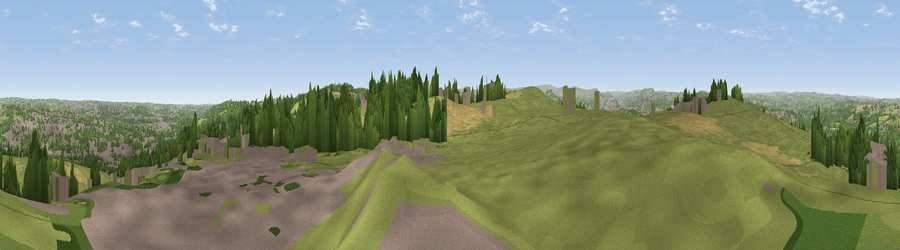

Viewpoint near Upper Hopton
#9855 in England · top 9% of its area beats it · near Upper HoptonThe view, rendered

A 360° render of this exact spot computed from the terrain model, tree cover and land cover — summer colours, afternoon light, calibrated against photographs of famous viewpoints. Real trees, hedges and buildings will differ in detail.
The panorama
Grey silhouette: terrain skyline in each direction (720 bearings, Earth curvature and refraction included). Dashed green: skyline with trees (+15 m) and buildings (+8 m) as obstacles. Blue strip: how far the ground is visible on each bearing.
Where the view opens
Wedge length = distance to the farthest visible ground on that bearing (vegetation-aware). Rings at 10, 25 and 50 km.
What fills the view
54% grassland · 22% woodland · 14% built-up · 10% cropland
Angular shares of the visible panorama (visual magnitude), not map area. Landscape diversity 0.51 (0–1 Shannon).
Key numbers
More beautiful places nearby
The staircase of upgrades: each row has a higher view potential than everything closer. Driving times are estimates from straight-line distance, calibrated against real road routing — check an actual route before setting out.
| Place | Direction | Drive | Score |
|---|---|---|---|
| Viewpoint near Kirkheaton | SSW · 1 km | ~2 min | 67.2 |
| Viewpoint near Kirkheaton | WNW · 1 km | ~2 min | 68.0 |
| Viewpoint near Grange Moor | SE · 4 km | ~10 min | 69.8 |
| Castle Hill | SW · 6 km | ~13 min | 70.2 |
| Viewpoint near Jackson Bridge | S · 11 km | ~21 min | 73.5 |
| Viewpoint near Greenfield | SW · 24 km | ~40 min | 76.0 |
| Viewpoint near Otley | N · 26 km | ~41 min | 77.5 |
| Darwen Hill | W · 51 km | ~72 min | 80.7 |
53.66332, -1.71356 · source: screening · position refined by local search. Computed location — check access rights before visiting.